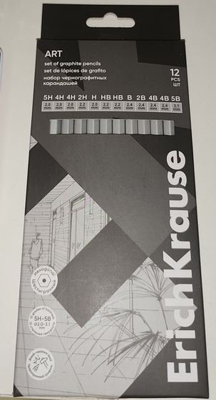
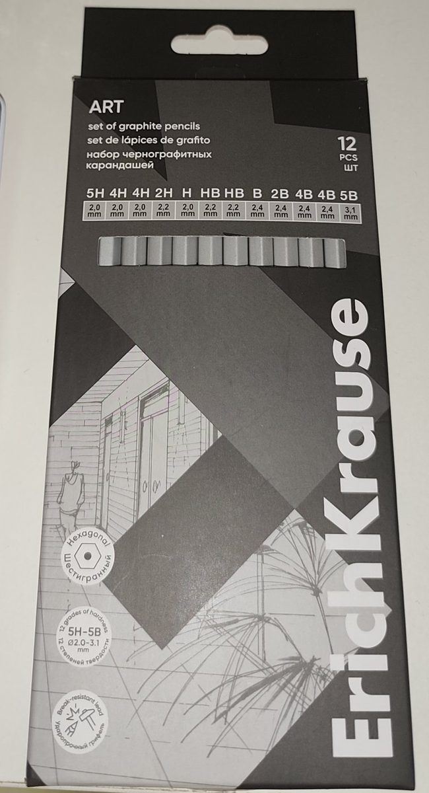

Art-Graphitstifte, 12 Stk.
Erich Krause · Künstlerstifte
Produkt ansehen →Erich-Krause-Graphitstifte in Zeichensets. Fragen Sie uns nach den verfügbaren Serien und Artikeln: Wir helfen Ihnen bei der Auswahl passend zu Ihrem Projekt.
Keine Preise und kein Online-Kauf — wir beraten Sie im Laden


Erich Krause · Künstlerstifte
Produkt ansehen →